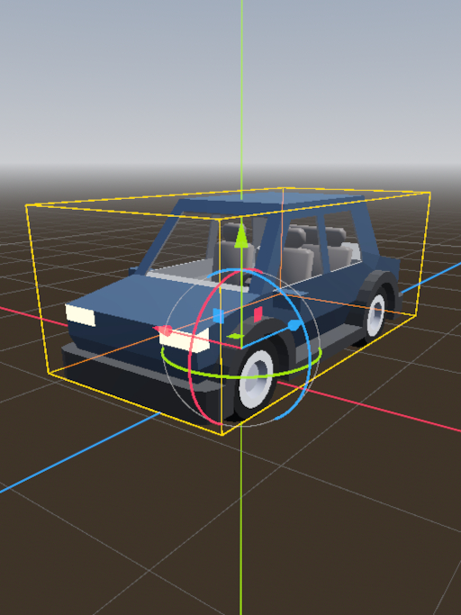
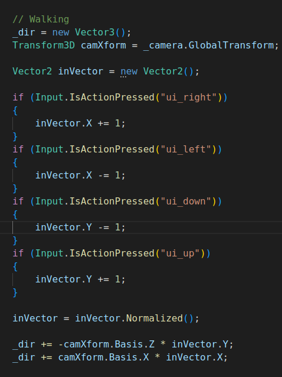
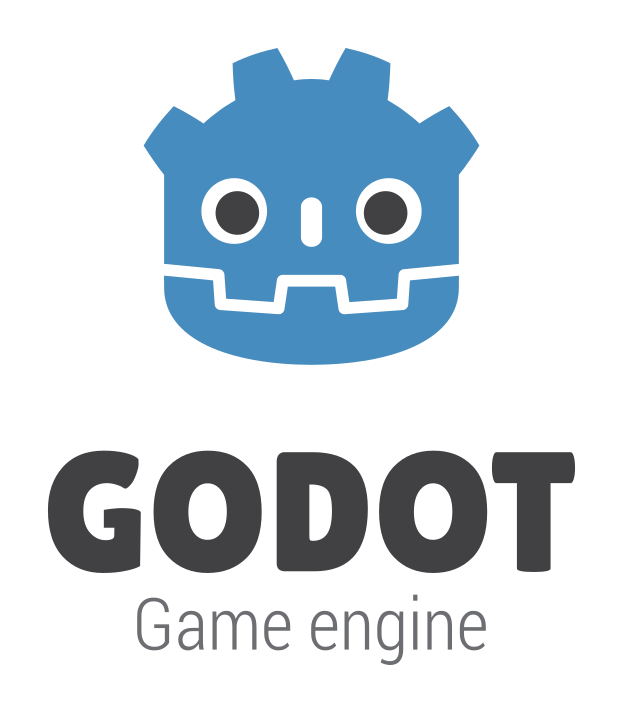
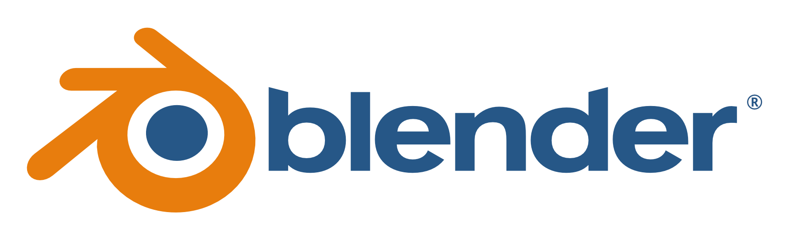

Gamedev

Gamedev, or game development, is a hobby where multiple art mediums are used in combination to make video games. Creating video games requires an understanding of programming, 2D art, 3D art, sound effects, music, UI, UX, and more. Finishing a game can take anywhere from a few days to over a decade, depending on the scope of the game. With such a large number of skills and vast amount of labor required, it can be very difficult to make a finished game.

Luckily, video games are not often made from scratch anymore (except as an intentional exercise). There are plenty of tools available which make it possible to create games without needing to build your own game engine and toolset. All the prerequisite skills are still required even with existing tools, but these tools make it easier for newcomers and experts alike. Below I've detailed all the tools I use in my typical game development workflow. As of this writing, all of them are free to use for commercial use.
Tools

Godot is a general purpose game engine, and as such is at the heart of the workflow. Other general purpose game engines exist, such as Unity and Unreal. I've chosen Godot over other options because it is free and open source. Unity has had a number of poor business dealings with game developers in recent years, and many studios consider it risky to continue to rely on Unity. Unreal is reliable and known for allowing developers to make beautiful games, but it's a powerful tool which is not lightweight. Godot is an ideal choice for independent developers and small studios, since it is a lightweight tool which is shielded against bad business decisions by its nature as open source. Both 2D and 3D games can be developed in Godot, and it exports to a number of platforms, including the web.

Blender is 3D modeling and animation software. Over the years it has picked up a number of features, so it can do a lot more than just 3D modeling if needed. However, I primarily use it to make and animate models for my games. Everything from the smallest rock to the main character need models, and Blender lets you build and export them to a variety of formats. Godot can even import .blend files directly!
Krita is 2D art software. It can be used to develop the art of a 2D game directly, or help develop the model textures in a 3D game. Many people may not be aware of how necessary 2D art is in 3D games, but I often use Krita or other 2D image manipulation software hand in hand with Blender.
Material Maker is software to help develop PBR (Physically Based Rendering) materials for 3D games. When making materials out of textures, much more than just the color of the surface is required. Surface normals, roughness, and displacement are other requirements, just to name a few. Material maker is helpful to produce PBR textures by building a node workflow, rather than following each step manually in image manipulation software over and over again. While not as popular and well known as other tools on this list, I've found it very valuable to my workflow.
Audacity is an audio editing tool. I use it frequently when editing sound effects for my games. It could be used for making music as well, if instruments are provided from mic input, but it's not great for this purpose. Still, Audacity is invaluable for being able to make, view, and edit sound effects.

Visual Studio Code is a tool from Microsoft for writing code known as an IDE (Integrated Development Environment). In comparison to just using something like notepad, it provides a number of quality of life features that make editing code quick and easy. These features include a built in file explorer, git support, terminals, and community extensions to provide syntax highlighting for every language. While I have been disappointed in VS Code's "all in" push for AI support, at the moment many of these features can be ignored or turned off. My IDE recommendation may change if VS Code continues to make obtrusive AI features a priority rather than providing more useful updates.